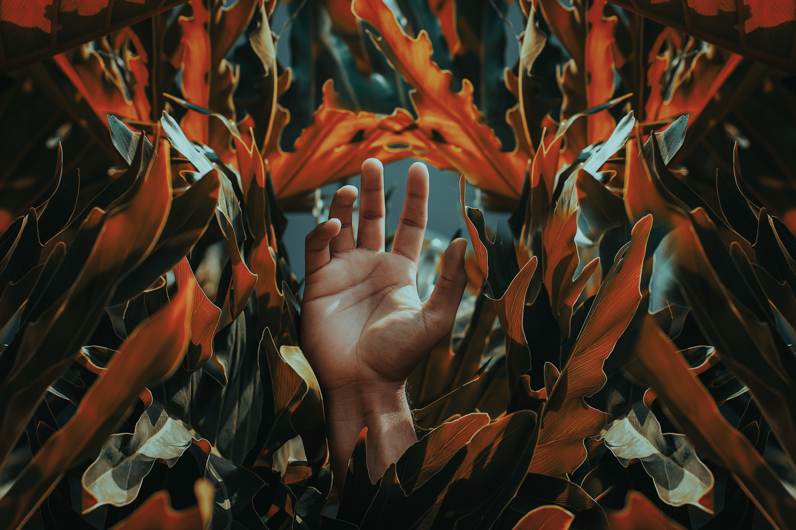

Livet og døden

Dette bildet er fra et kunstprosjekt jeg hadde om livet og døden.
Rammen rundt prosjektet var å prøve å se eget forhold til død fra en annens perspektiv.
Bildet symboliserer for meg overgangen fra et langt og friskt liv til en lengre og tristere tilstand av død-het.
Mediet er foto og olje på lerret.
Bildet ble stilt ut på Høstutstillingen til Astrup Fearnley.
Møbler i solnedgang

Denne installasjonen er fra et av mine første prosjekter, Møbler i solnedgang.
Betydningen av dette prosjektet er veldig personlig, og denne installasjonen er ment
å symbolisere barndom og skal vekke noen nostalgiske tanker og følelser hos den som ser den.
Jeg har tatt utgangspunkt i de modernistiske møblers skarpe hjørner og deres møte med barn.
Det gis rom for refleksjon rundt egen barndom og tilhørende møbler.
Samspill menneske-natur

Dette siste bildet handler om samspillet mellom naturen og menneskene, og påvirkningen vi mennesker har på dyrene og jorda rundt oss.
Jeg var stasjonert på Svalbard i 14 måneder for å studere menneskenes samspill med naturen.
Det jeg observerte skiller seg sterkt fra observasjoner gjort på østlandet, og prosjektet vil videreutvikles over flere år.
Dette kunstverket er spesielt aktuelt nå og stilles for øyeblikket ut på Sørlandets Kunstakademi
som en del av en større serie kunstverk inspirert av naturen.